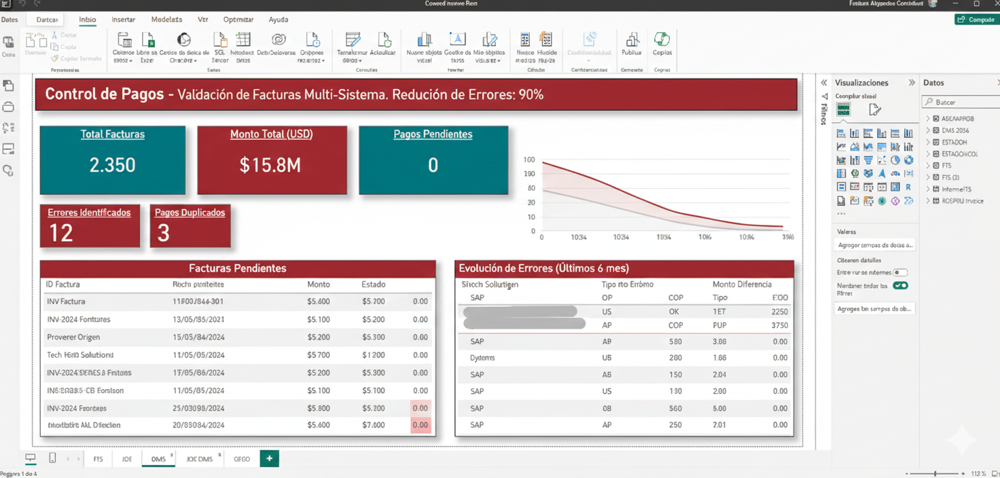
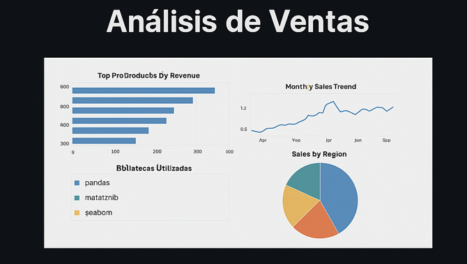
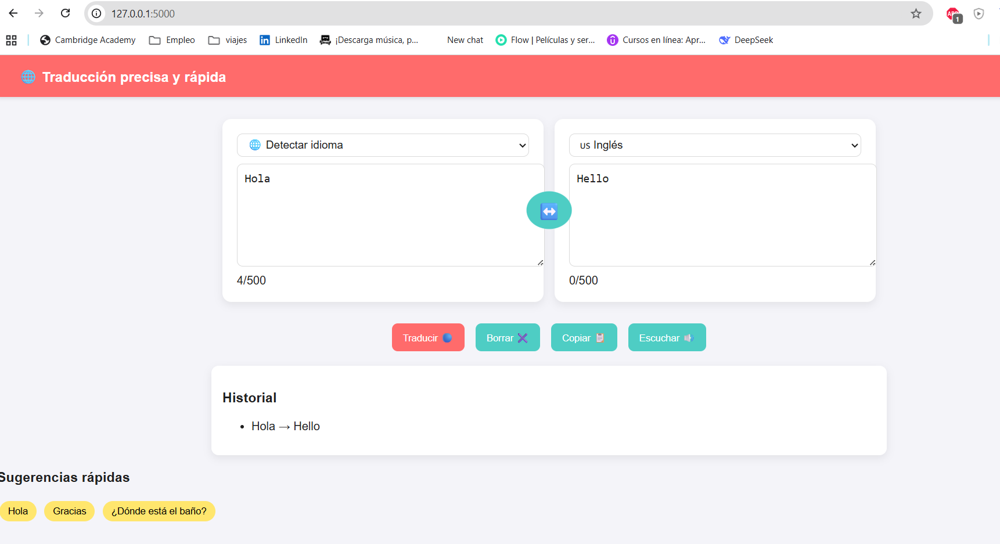
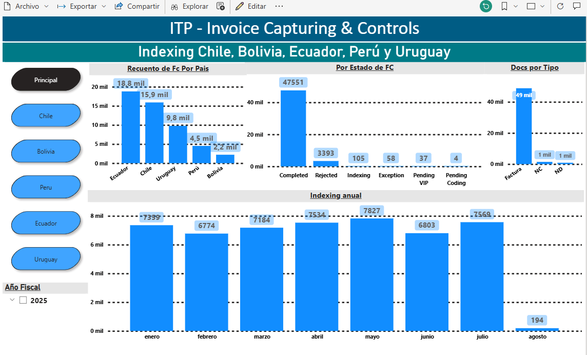

Control de Pagos
Cruce automatizado de reportes con Power BI. Reducción del 90% en errores de validación.
Explorar ProyectoAnalista de Datos • Power BI • Python • HTML
Soy un Analista de Datos con un enfoque en la eficiencia y la innovación. Mi pasión es transformar la complejidad en soluciones ágiles y funcionales: me dedico a automatizar, simplificar procesos y extraer valor actionable de la información.
Para mí, los datos no son solo números, sino historias y oportunidades que impulsan la toma de decisiones.
Dominio Técnico: Trabajo con Python, Power BI, Excel avanzado y la plataforma Celonis (Process Mining).
Mentalidad: Soy un aprendiz constante. Busco la forma más inteligente y actualizada de generar un impacto medible.
Perfil Personal: Me defino como una persona curiosa, práctica y enfocada en las conexiones. Mi filosofía es que, aunque los datos son mi campo, lo más importante son las personas y los equipos que se crean en el camino.
Valores Clave: Curiosidad, Disciplina y Pragmatismo.
Intereses: Encuentro disciplina y enfoque en el boxeo, y disfruto del ciclismo urbano. Soy fanático del asado (dicen que me sale bastante bien), y comparto con mi pareja el gusto por el buen vino y las catas.
Conectemos. Estoy siempre abierto a nuevas oportunidades y a generar valor juntos. Hechale un vistazo a mi hoja de vida aquí
Los datos no son solo números; son oportunidades esperando ser descubiertas.
Analista de Datos – Desarrollo de dashboards en Power BI y automatización de reportes en Excel.

Cruce automatizado de reportes con Power BI. Reducción del 90% en errores de validación.
Explorar Proyecto


Validación Contable, Recepción de Facturas y automatizaciones en VBA.
¿Te gusta mi trabajo? ¡Deja tu feedback o un saludo aquí!